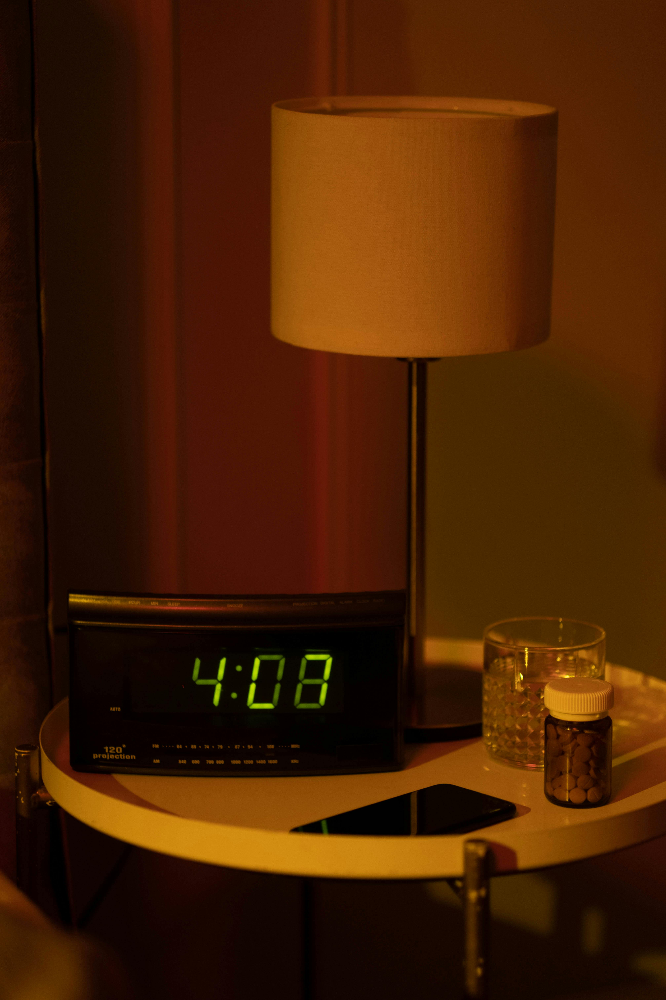

Let the healing begin!
Cold & Congestion
- Honey & Lemon Tea: Mix a tablespoon of honey with a squeeze of lemon in warm water to soothe a sore throat and help with coughs.
- Steam Inhalation: Boil water, pour it into a bowl, add eucalyptus oil or a pinch of Vicks, cover your head with a towel, and breathe deeply.
- Garlic Remedy: Crush a clove of garlic, mix it with honey, and swallow. It's an old immune booster!
Stomach Upset
- Ginger Tea: Boil slices of fresh ginger in water and sip slowly. It helps with nausea and bloating.
- Cumin Water: Boil a teaspoon of cumin seeds in water, strain, and drink to settle digestion.
- Banana & Yogurt: Great for mild diarrhea or gut issues.
Headache
- Peppermint Oil Massage: Dab some peppermint essential oil on your temples and gently massage.
- Cinnamon Paste: Make a paste using cinnamon powder and water, apply it to your forehead for sinus-related headaches.
Cough
- Turmeric Milk (Golden Milk): Heat milk with a pinch of turmeric and a dash of black pepper. Drink it before bed.
- Onion & Honey Syrup: Finely chop an onion, sprinkle it with honey, and let it sit for a few hours. Take the syrup by the spoonful.
Minor Cuts or Burns
- Aloe Vera: Apply fresh aloe gel directly to soothe burns.
- Turmeric Paste: Mix turmeric with water to make a paste and apply it to cuts for its antiseptic properties.

Sleeplessness (Insomnia)
- Warm Milk & Nutmeg: Add a pinch of nutmeg to warm milk and sip before bed.
- Lavender Pillow Mist: Spritz your pillow with diluted lavender essential oil to promote relaxation.
Joint Pain or Sore Muscles
- Epsom Salt Bath: Soak in a warm bath with Epsom salt to ease aches.
- Castor Oil Massage: Warm a little castor oil and massage onto the affected joints.